🔄️ AEC Interpreter: An Agentic AI Layer for Zero-Hallucination BIM Retrieval
An intelligent middleware that translates messy, unstructured construction site data into deterministic, strict schema BIM updates.
Tech Stack: Python · Gemini 2.5 Flash · Qwen2.5-VL-7B · LoRA (Unsloth) · LangGraph · FastMCP · Neo4j · IfcOpenShell · Pydantic · Modal (A100)

Live demo: The system ingests multimodal site data (left/center) and deterministically retrieves the exact element GUID in the 3D BIM viewer (right).
Overview of My Research Vision
Bridging Site Reality and Strict Schemas with Zero Hallucination
My architectural background revealed a fundamental disconnect in construction tech: the physical site generates messy, unstructured data, while digital twins demand strict, geometric topologies. To bridge this semantic gap, my research focuses on two critical technical pillars: multimodal grounding to interpret domain-specific site evidence, and ontology-based schema alignment to map that visual evidence directly into formal architectural graphs. By combining neural perception with deterministic graph queries, this neuro-symbolic framework guarantees zero-hallucination data retrieval, laying the groundwork for truly autonomous AEC systems.
1. The Broken Workflow: Solving the "WHERE"
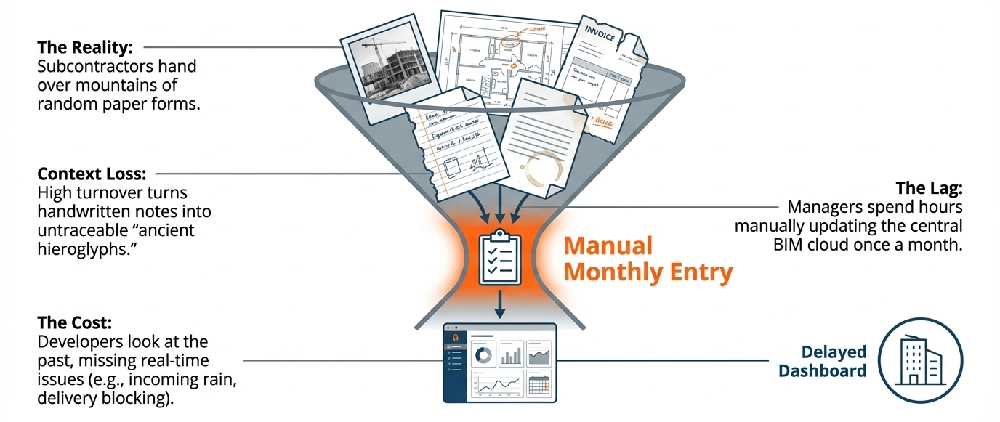
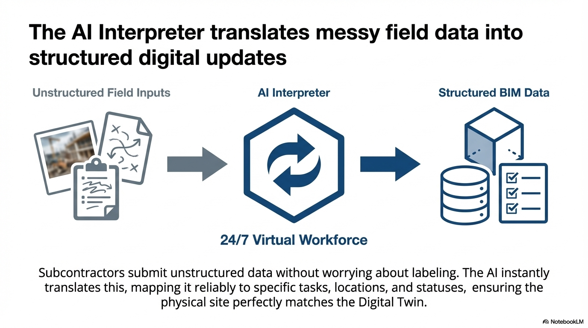
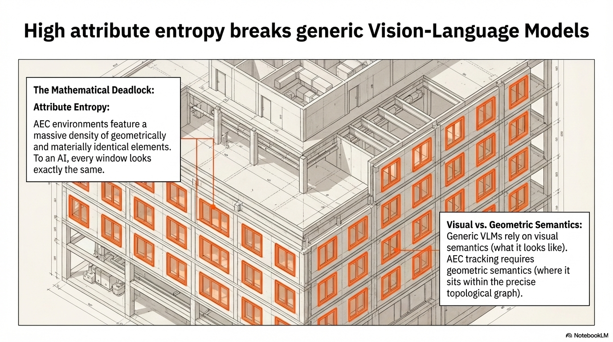
The Stakeholder Disconnect
Construction execution is fundamentally disjointed. Developers track progress via spreadsheets, architects rely on pristine 3D models, and subcontractors report issues using messy photos and fragmented chats (e.g., a circled floorplan with "hinge issue").
The Mathematical Deadlock (Attribute Entropy)
When a floor contains 46 geometrically identical windows, relying on standard Vision AI for visual matching yields a mathematical deadlock (~2.2% baseline accuracy). Before AI can analyze what an issue is, it must conclusively solve where it is. Otherwise, any digital twin update is inherently hallucinated.
The Visual vs. Geometric Semantics Gap
Generic Vision-Language Models rely purely on visual semantics—they look for pixels resembling a window. However, AEC operates on geometric semantics. A 6th-floor window looks identical to a 3rd-floor window. To succeed, the AI must comprehend underlying 3D architectural topology, translating 2D visual evidence into precise spatial relationships.
The Solution
To bridge this gap, the AEC Interpreter acts as an intelligent middleware, using multimodal grounding to anchor unstructured site data into strict IFC schemas before any data entry occurs.
The Impact of Multimodal Grounding & Ontology-Based Schema Alignment:
- Baseline (Text-Only): A simple text query ("Which window?") yields 263 candidates (0.38% precision, effectively a random guess).
- Multimodal Fusion: The fine-tuned VLM extracts structured constraints from noisy site data, achieving a 79% average search space reduction across 300 evaluation cases. In the best cases—where spatial topology is available—the pool narrows from 263 to as few as 3 candidates.
- Zero-Hallucination Guardrails: Schema alignment is critical. By training the model on ontology-based data and enforcing Pydantic validation, the AI’s output is compiled directly into deterministic Cypher queries. This ensures 100% ontological compliance and eliminates LLM hallucination in the final retrieval step.
Ultimately, the system does not learn to probabilistically "guess" the right element; it learns to comprehend the underlying 3D building topology and its rigid architectural relationships.
2. System Architecture: The Neuro-Symbolic Engine
To eliminate the hallucination risks inherent in parsing highly subjective visual inputs, the architecture evolved from a baseline ReAct agent (V1) to a deterministic Neuro-Symbolic pipeline (V2).
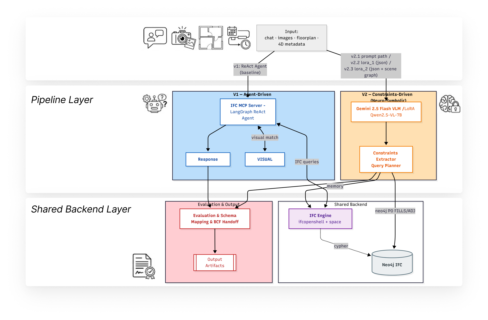
The Baseline: Agent-Driven (V1)
Initially deployed as a LangGraph ReAct agent utilizing FastMCP for dynamic IFC tool calling. While functional out of the box, it proved non-deterministic, suffered from high latency (~15s/inference via API), and remained highly vulnerable to open-domain hallucinations.
The Solution: Constraints-Driven Neuro-Symbolic Layer
The final architecture replaces free-form LLM reasoning with an explicit constraint extraction → deterministic query planning pipeline. This effectively bridges the semantic gap between probabilistic visual perception and rigid geometric databases.
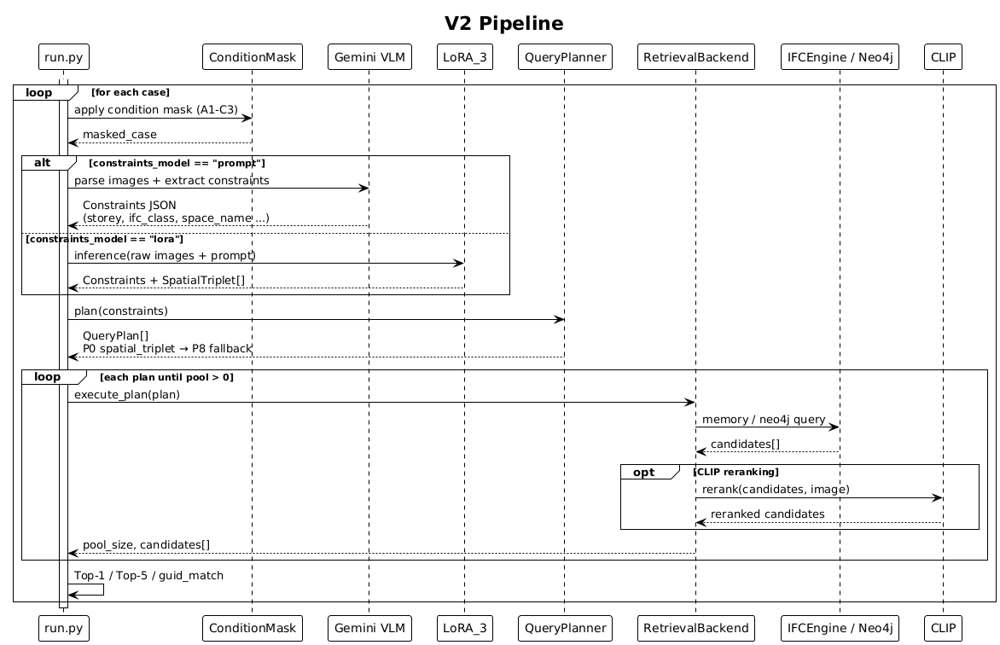
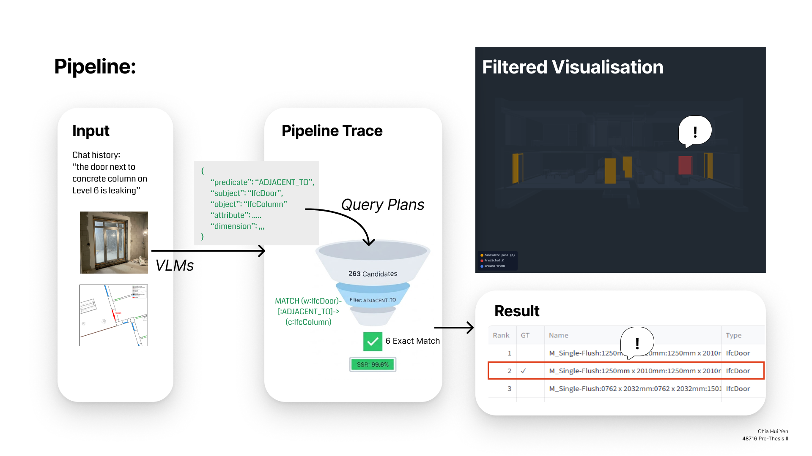
1. The Neuro Layer (Perception)
A highly optimized Vision-Language Model (Qwen2.5-VL-7B fine-tuned via LoRA) digests noisy, multimodal site inputs to extract precise structural constraints.
- Relation-Region Crops (In Progress): To overcome VLM "Shortcut Learning" (where models guess spatial relationships based on language priors), the VLM is trained explicitly on the interface boundaries between elements. This forces it to extract physical topological predicates like
ADJACENT_TOorCONTINUOUSbased on actual visual evidence.

2. The Pydantic Contract (The Bridge)
The Neuro layer is not allowed to generate free text. It must output a strictly typed Pydantic schema. This acts as the impenetrable boundary between the probabilistic AI perception and the deterministic backend.
{
"storey_name": "6 - Sixth Floor",
"ifc_class": "IfcWindow",
"spatial_relation": "ADJACENT_TO",
"spatial_relation_neighbor_type": "IfcColumn"
}3. The Symbolic Layer (Retrieval)
The extracted JSON schema passes through a Python template compiler to generate a Cypher query. Crucially, there is zero LLM involvement in this final step. The deterministic graph traversal runs directly against the Neo4j/IFC graph database, guaranteeing 100% ontological compliance and zero hallucination.
// Auto-compiled Cypher Query executed against Neo4j
MATCH (window:IfcWindow)-[:CONTAINED_IN]->(wall:IfcWall),
(column:IfcColumn)-[:ADJACENT_TO]-(wall),
(window)-[:ADJACENT_TO]-(column)
RETURN window.GlobalId AS TargetWindowID3. Data Pipeline: Overcoming the Data Bottleneck
Because real construction site data is highly confidential and lacks structured spatial annotations, I engineered a fully automated synthetic data pipeline—the "Skeleton-Skin" architecture—to train the Neuro layer with zero manual labeling.
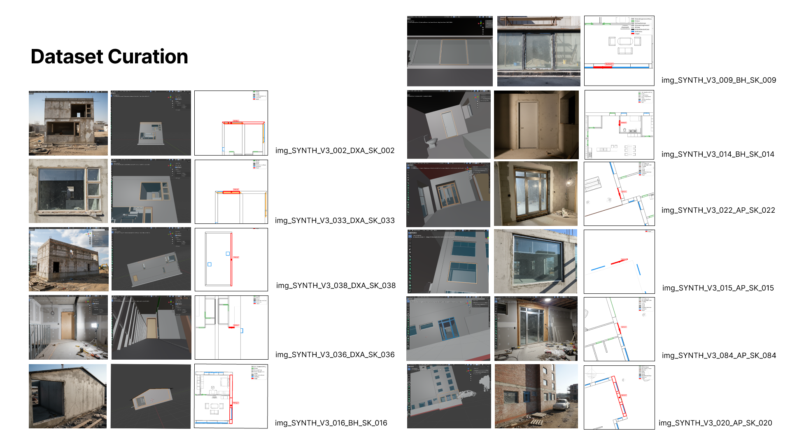
The "Skeleton-Skin" Concept
The pipeline uses deterministic IFC geometry (the "skeleton") to mine ground-truth topological triplets. It then uses headless Blender and Gemini to wrap this geometry in a noisy, multimodal "skin" (photoreal site photos, floorplan patches, and fragmented chat logs) to simulate real-world entropy.
// Automated Multimodal Data Generation Pipeline
1. IFC Parsing: Extract element index (attributes, storey, class) via IfcOpenShell.
2. Skeleton Mining: Extract ground-truth spatial triplets (e.g., Window FILLS Wall).
3. Spatial Cropping: Render relation-crops via headless Blender (Subject + Anchor).
4. Skin Generation: Gemini 2.5 Flash converts wireframes → photorealistic site photos.
5. Context Assembly: Generate matplotlib floorplan patches from 2D IFC geometries.
6. ChatML Formatting: Compile multimodal inputs into Qwen2.5-VL LoRA training data.LoRA Fine-Tuning Details
The model was fine-tuned to map the noisy "skin" inputs strictly back to the topological "skeleton" constraints.
Model: Qwen2.5-VL-7B-Instruct (4bit)
Adapter: LoRA (r=16, alpha=32)
Dataset: 1,377 multimodal cases
Hyperparams: 5 Epochs, LR 2e-4
Batch Size: 16 (Effective)
Hardware: Modal A100 (40GB)
Latency: ~1s (local LoRA) vs ~4.5s (API)The Schema Contract (Output)
The fine-tuned VLM's output is strictly constrained to this JSON format, acting as the deterministic blueprint for the Cypher graph query.
{
"storey_name": "3 - Third Floor",
"ifc_class": "IfcWindow",
"spatial_relations": [
{
"predicate": "ADJACENT_TO",
"object_type": "IfcRailing",
"confidence": 1.0
}
]
}4. Evaluation & Results
The attribute-extraction pipeline (LoRA_2) was evaluated via a 6-condition modality ablation on a 50-case holdout set across 6 conditions (300 total runs). This isolated the distinct impact of textual, visual, and 2D spatial context on retrieval accuracy. The topology-aware LoRA_3 (with spatial triplet extraction) is currently under 3-way comparative evaluation.
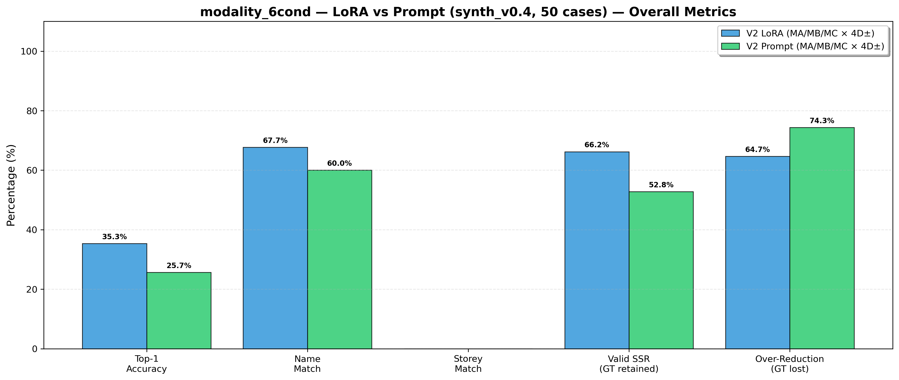
| Metric | LoRA_2 (Fine-Tuned) | Gemini Prompt (Zero-Shot) | Delta |
|---|---|---|---|
| Top-1 Accuracy | 35.3% | 25.7% | +9.6 pp |
| Valid SSR (Ground Truth retained) | 66.2% | 52.8% | +13.4 pp |
LoRA vs. Prompt Pipeline Trace:
| LoRA_2 → CORRECT ✓ | Gemini Prompt → HALLUCINATION ✗ |
|---|---|
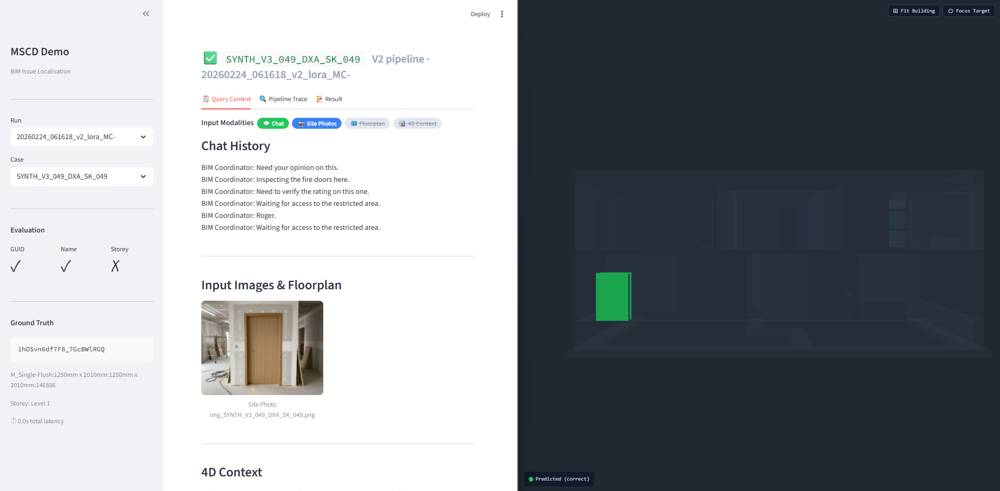 |
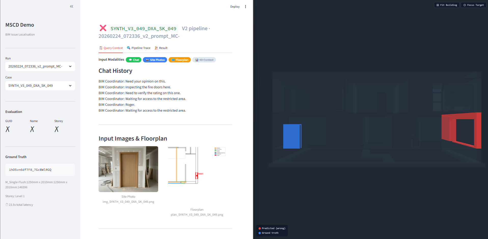 |
Case 049: The fine-tuned LoRA successfully maps noisy, ambiguous visual and text inputs directly to the correct GUID. The zero-shot baseline, given the exact same context, hallucinates the spatial location entirely.
Key Engineering Insights
- Floorplans Provide Geometric Anchoring: Generic VLMs struggle with pure 3D scene recognition in homogeneous environments. Adding 2D floorplan crops to the multimodal prompt provided necessary spatial anchoring, driving a +10pp increase in LoRA accuracy.
- Protecting the Ground Truth: The fine-tuned LoRA drastically reduced "over-filtering"—the fatal retrieval error of accidentally dropping the correct element from the candidate pool—proving its robustness against noisy, real-world site data.
- The Topology Imperative (In Progress): The empirical data confirms our core hypothesis: attribute filtering alone cannot overcome the mathematical deadlock of high-density buildings. LoRA_3 (1,377 cases, spatial triplet supervision) already achieves 93% spatial predicate accuracy and 0% false positive rate on held-out test data. End-to-end evaluation with Neo4j graph traversal (Priority-0 Cypher queries) is underway — projected to push Top-1 accuracy well beyond the current 35.3% ceiling.
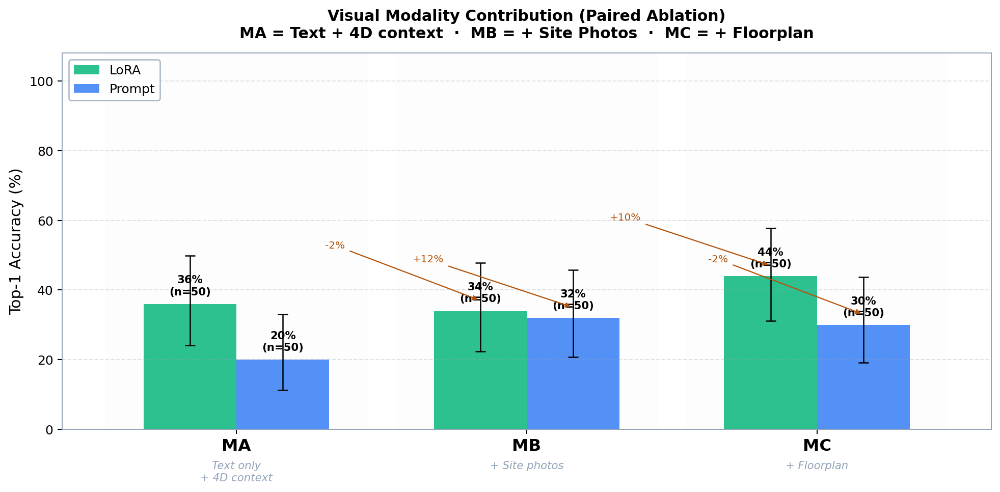